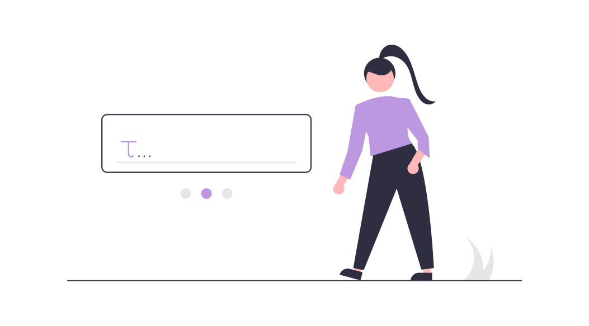

<ion-content mode="md">

  <svg xmlns="http://www.w3.org/2000/svg" viewBox="0 0 1440 320"><path fill="#bb98df" fill-opacity="1" d="M0,288L48,256C96,224,192,160,288,160C384,160,480,224,576,218.7C672,213,768,139,864,138.7C960,139,1056,213,1152,250.7C1248,288,1344,288,1392,288L1440,288L1440,0L1392,0C1344,0,1248,0,1152,0C1056,0,960,0,864,0C768,0,672,0,576,0C480,0,384,0,288,0C192,0,96,0,48,0L0,0Z" style="--darkreader-inline-fill:#421f65;" data-darkreader-inline-fill=""></path></svg>

  <div class="sidemenubtn-container">
    <ion-buttons slot="start">
      <ion-back-button defaultHref="/login"></ion-back-button>
    </ion-buttons>
  </div>

  <div class="main-container animate__animated animate__zoomIn">

    <div class="rep-icon">
      
    </div>

    <div class="form">
        <p>Full Name</p>
        <ion-input></ion-input>
        <p>Date of Birth</p>
        <ion-datetime [(ngModel)]="acc_birthdate" [ngModelOptions]="{standalone: true}" displayFormat="MM DD YY" placeholder="Select Date"></ion-datetime>
        <p>Gender</p>
        <ion-list lines="none">
          <ion-radio-group value="male">
            <ion-item>
              <ion-label>Male</ion-label>
              <ion-radio slot="start" value="1"></ion-radio>
            </ion-item>
            <ion-item>
              <ion-label>Female</ion-label>
              <ion-radio slot="start" value="2"></ion-radio>
            </ion-item>
          </ion-radio-group>
        </ion-list>
        <p>Username</p>
        <ion-input></ion-input>
        <p>Password</p>
        <ion-input type="password"></ion-input>
        <ion-button expand="block" shape="round">Register</ion-button>
      </div>


  </div>
</ion-content>
